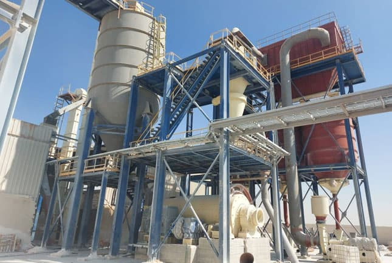

Historia
Luigi Mazzoccoli, hombre emprendedor y tenaz

Crea una empresa en Venezuela para la elaboración de la cal, en el año 1983, en Yaritagua-Edo. Yaracuy, su nombre MAXICAL, distinguiéndose por ofrecer a sus clientes un producto de excelente calidad por la selección de su materia prima, muy rica en carbonato (CaO3). En un principio el sistema de calcinación de la piedra se caracteriza por ser a cielo abierto utilizándose el gasoil como combustible.
A finales de 1991, en busca del mejoramiento continuo, por medio de un contrato con CORPOVEN, se instala un gasoducto de más de 5 Km de largo, costeado totalmente por nuestra empresa, para cubrir las necesidades de la planta.
En el año de (1992):
Se inicia la construcción de un horno vertical que permite un ahorro en el consumo de gas, aprovechándose el calor de combustión y logrando mayor eficiencia y calidad. El 25 de Abril de 1993, nuestro fundador Luigi nos deja, y su hermano Mario Mazzoccoli comienza una nueva etapa para el desarrollo de la planta.
A principio del año 2012 se empieza una nueva etapa con la implantación de un sistema de gestión de la calidad, buscando la plena satisfacción de nuestros clientes y la mejora continua de todos nuestros procesos.